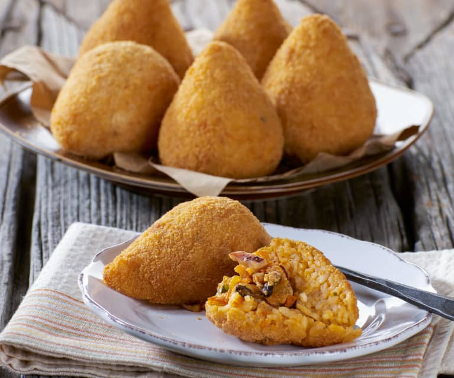

Arancini (Sicilian Specialty)

This deepfried delicacy of Sicily is packed with rice, meat, tomato sauce, and caciocavallo cheese
Arancini are enjoyed all over Sicily, and while most are
prepared with rice, meat, sauce, and cheese there are some areas that
add their own flavors such as pistacchio to this breaded delight.
Like other Italian dishes, these can be enjoyed as a snack or made into a full meal.
The preparation is a little on the longer side, but overall not so complicated.
Difficulty: Intermediate
Prep Time: 1-2 hours
Ingredients
- Saffron
- Risotto rice
- Salt
- Water for rice and dough
- Caciocavallo cheese (grated)
- Flour
- Breadcrumbs
- Sunflower oil
- 1 onion
- 200 g minced meat
- 400 ml strained tomatoes
- 100 ml red wine
- 160 g peas
- Extra virgin olive oil
- Pepper
Steps
- Cook the rice in 1.2 litres of boiling, salted water for 15 minutes
- Dissolve the saffron in hot water and add it to the rice along with half of the butter and the grated caciocavallo
- Finely chop the onion and saute it with the remaining butter and a dash of olive oil
- Add the mince meat and brown
- Deglaze with the red wine and let it reduce
- Add strained tomatoes, season with salt and pepper cook for 10 minutes
- Add the peas and simmer and cook for another 10 minutes
- Cut the piece of caciocavallo into small cubes
- For each arancini, place a tablespoon of rice in the palm of your hand and flatten to make it hollow
- Fill with meat and caciocavallo cubes
- Put flour, a pinch of salt and water into a bowl and whisk until lump-free
- Dip the arancini in it and then roll in the breadcrumbs
- Heat the oil in the pan and fry the arancini in it
- Put them in a paper towel and let them dry
- Serve the arancini immediately hot
- Enjoy!
Back to the Top
Home